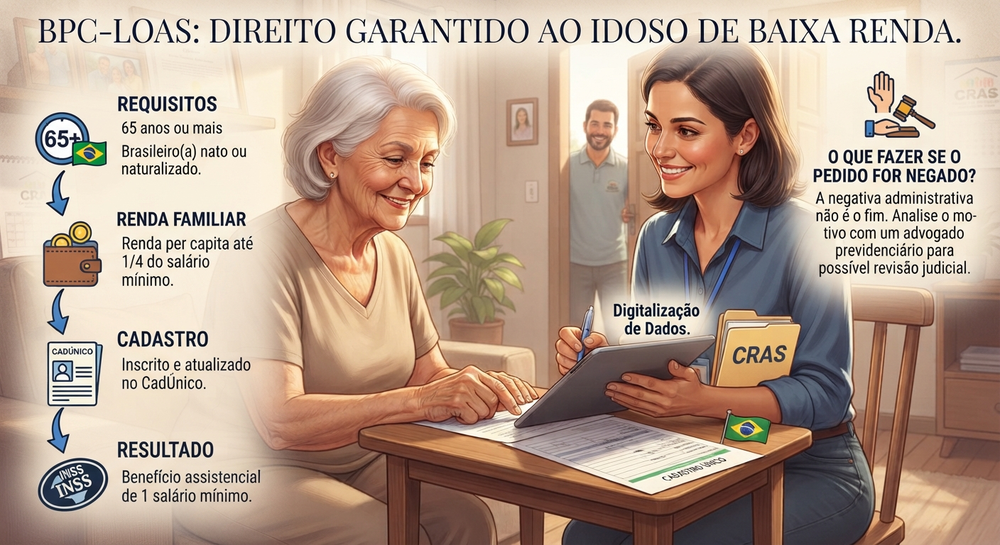

BPC LOAS para idosos: quem tem 65 anos pode receber um salário mínimo?
Compreenda os critérios legais, a exigência de renda familiar e os passos necessários para garantir este benefício assistencial.

O Benefício de Prestação Continuada (BPC), previsto pela Lei Orgânica da Assistência Social (LOAS), é uma das garantias mais importantes para assegurar o sustento de pessoas idosas em situação de vulnerabilidade social. No entanto, muitas famílias ainda têm dúvidas sobre quem realmente tem direito e como funciona a comprovação de renda exigida pelo INSS.
1. O que é o BPC/LOAS e quem pode receber?
Diferente de uma aposentadoria comum, o BPC não exige que a pessoa tenha contribuído para a Previdência Social. Trata-se de um benefício assistencial no valor de **um salário mínimo mensal** pago pelo Governo Federal a:
- Idosos com 65 anos de idade ou mais; ou
- Pessoas com deficiência de qualquer idade que apresentem impedimentos de longo prazo.
2. Qual é o critério de renda?
O principal requisito para a concessão do BPC ao idoso é comprovar que a renda mensal per capita (por pessoa) da família é **inferior a 1/4 (um quarto) do salário mínimo vigente**.
No entanto, a Justiça tem entendido que esse critério não deve ser rígido a ponto de ignorar gastos essenciais da família, como despesas com medicamentos de uso contínuo e tratamentos de saúde. Caso o INSS negue o benefício sob alegação de superação da renda, é possível reverter a situação judicialmente.
3. A importância do Cadastro Único (CadÚnico)
Antes de dar entrada no pedido junto ao INSS, é obrigatório que o idoso e todos os membros de sua família estejam devidamente inscritos e com os dados atualizados no **CadÚnico** (Cadastro Único para Programas Sociais do Governo Federal), procedimento realizado no CRAS do município.
4. O que fazer em caso de negativa do INSS?
Infelizmente, é comum que o INSS indefira pedidos de BPC/LOAS por divergências cadastrais ou interpretações restritivas da renda. Se isso acontecer, o cidadão não deve desanimar: é possível buscar a revisão do caso na via administrativa ou ajuizar uma ação judicial com o apoio de um advogado especialista, garantindo uma perícia social detalhada sobre a realidade do lar.
Precisa de auxílio com o seu benefício?
Se o seu BPC/LOAS foi negado ou se você tem dúvidas sobre como dar entrada nos documentos, entre em contato com o escritório para uma análise personalizada do seu caso.
Falar pelo WhatsApp